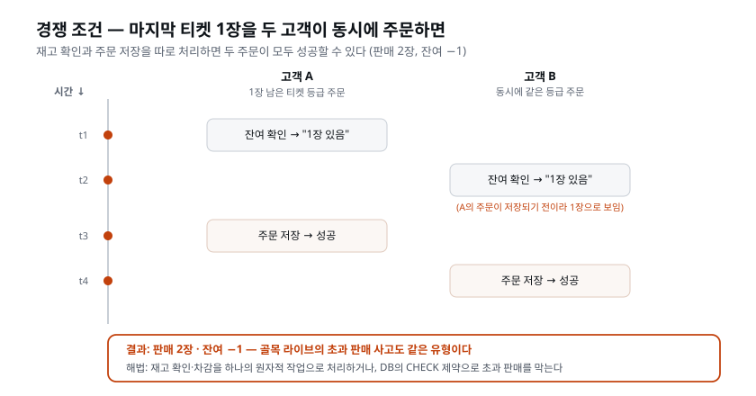

이 장이 끝나면: 코드를 등급으로 평가하되 고치지는 못하는 코드리뷰어와, PRD의 완료 기준을 실행 가능한 검사로 바꿔 직접 돌려 보는 QA — 두 검증 역할을 서브에이전트로 추가한다. 그다음 사고가 나면 피해가 큰 기능부터 검증한다. 예를 들어 "마지막 1장을 두 명이 동시에 사면?" 같은 티켓 서비스의 문제와, 결제를 붙이며 손으로 확인하지 못한 실패 상황이 있다. 이 장에서는 QA가 그런 상황을 재현하고 결과를 확인한다.
디자인에서 우리는 만드는 사람(디자이너)과 검토하는 사람(리뷰어)을 분리했고, 리뷰 왕복이 품질을 만드는 것을 경험했다. 코드도 정확히 같은 구조가 필요하다. 백엔드·프론트엔드 역할이 만든 코드를, 만들지 않은 눈이 본다.
왜 굳이 '만들지 않은 눈'이어야 하는가. 사람이든 AI든, 자기가 만든 것에는 맹점이 생기기 때문이다. 내가 어떤 의도로 코드를 짰는지 스스로 알고 있으면, 그 코드를 볼 때도 '의도대로 읽어 버린다.' "여기서는 잔여가 당연히 1 이상일 테니 검사 안 해도 되겠지" 하고 짠 사람은, 리뷰할 때도 같은 가정을 무의식적으로 반복한다. 그 가정이 틀렸다는 걸 발견하려면, 그 가정을 공유하지 않은 제3의 눈이 필요하다. 이것이 소프트웨어 공학이 수십 년간 코드 리뷰와 QA를 별도 역할로 둔 이유다 — 실력의 문제가 아니라 관점의 문제다.
코드 검증의 눈은 둘이다. 보는 것이 서로 다르다.
| 코드리뷰어 | QA | |
|---|---|---|
| 보는 대상 | 코드 그 자체 | 동작하는 결과 |
| 묻는 질문 | 이 코드는 잘 쓰였는가 | 이 기능은 약속대로 도는가 |
| 잡는 것 | 경계 위반, 위험한 패턴, 명세 불일치, 중복 | 완료 기준 미달, 엣지 케이스에서의 오작동 |
| 산출물 | 등급 리포트 (Blocker/Major/Minor) | 테스트 케이스 문서와 실행 결과 (통과/실패) |
이 둘은 서로 다른 관점에서 검증하며 부족한 부분을 보완한다. 비유하면 이렇다. 새로 지은 건물을 검사할 때, 한 사람은 설계 도면과 실제 시공을 대조한다 — 철근이 도면대로 들어갔는지, 배선이 규정을 어기지 않았는지. 눈에 보이지 않는 벽 속까지 도면으로 따진다. 이것이 코드리뷰어다. 다른 사람은 실제로 수도꼭지를 틀고 스위치를 눌러 본다 — 물이 나오는지, 불이 켜지는지, 비상구 문이 진짜 열리는지. 도면이 아니라 동작을 본다. 이것이 QA다. 도면 검사만으로는 "수도꼭지가 실제로 새는지"를 알 수 없고, 동작 검사만으로는 "벽 속 배선이 규정 위반인지"를 알 수 없다. 그래서 두 눈이 다 필요하다.
한 가지 흔한 오해를 미리 풀자. "AI가 짠 코드인데 AI한테 또 검사를 시키면, 자기가 자기 걸 보는 것 아니냐"는 질문이 반드시 나온다. 답은 — 역할이 다르면 관점이 다르다는 것이다. 백엔드 역할에게는 "만들라"는 임무와 만드는 도구(Edit·Write)를 줬고, 코드리뷰어에게는 "지적하라"는 임무와 읽는 도구만 줬다. 같은 Claude 두뇌라도 어떤 임무·어떤 도구를 쥐여 주느냐에 따라 완전히 다르게 행동한다. 게다가 코드리뷰어는 백엔드가 '왜 그렇게 짰는지'라는 속사정을 공유하지 않은 채, 오직 눈앞의 코드와 명세 문서만 보고 판단한다. 그래서 '자기가 자기 걸 보는' 것이 아니라, 역할로 분리된 남의 눈이 되는 것이다.
코드리뷰어의 규율은 디자인 리뷰어와 같다 — 지적만 한다, 등급과 근거를 붙인다, 고치지 않는다(도구가 없다). 실무의 코드 리뷰 문화도 같은 원리다. 회사에서 동료의 코드를 리뷰할 때 리뷰어가 남의 브랜치에 직접 손대지 않는다. 지적하고, 수정은 작성자가 한다. 책임의 소재가 흐려지지 않게 하기 위해서다.
'책임의 소재'가 왜 그렇게 중요한지 조금 더 풀어 보자. 리뷰어가 지적만 하고 작성자가 고치면, 그 코드는 여전히 작성자의 코드다. 나중에 문제가 생겨도 "누가 이걸 이렇게 짰지"의 답이 분명하고, 작성자는 자기 코드를 끝까지 이해하고 있으므로 다음 수정도 매끄럽다. 반대로 리뷰어가 지적하면서 직접 고쳐 버리면, 그 코드는 두 사람이 섞여 작성한 코드가 된다. 작성자는 자기가 안 짠 부분을 떠안게 되고, 리뷰어는 지적자이면서 동시에 작성자가 되어 버려 '검증'이라는 자기 본분을 스스로 무너뜨린다. 그래서 좋은 리뷰 문화일수록 이 선을 엄격히 지킨다. 우리는 이 규율을 사람의 자제력이 아니라 도구 구성으로 강제한다 — 코드리뷰어에게는 애초에 파일을 고치는 도구(Edit·Write)를 주지 않는다. 고치고 싶어도 고칠 수단이 없다. 개인의 자제력에 기대지 않고 도구 권한으로 규칙을 지키게 하는 것, 이것이 이 과정 전체를 관통하는 발상이다.
또 하나, 리뷰어가 매기는 '등급'이 왜 필요한지도 짚어 두자. 리뷰 결과가 "여기 이거 이상하고, 저기 저것도 좀 그렇고, 이 이름도 별로고…"처럼 중요도 구분 없이 나열되면, 사람은 무엇부터 손대야 할지 알 수 없다. 그래서 리뷰어는 발견한 문제마다 심각도 등급을 매긴다.
| 등급 | 뜻 | 온티켓 예 |
|---|---|---|
| Blocker | 이대로 나가면 안 되는 것. 반드시 고쳐야 함 | 결제 금액을 클라이언트가 보낸 값 그대로 신뢰함, 비밀키가 코드에 박혀 있음 |
| Major | 큰 문제지만 서비스가 즉시 중단되지는 않는 것. 곧 고쳐야 함 | 잔여 검사와 차감이 원자적이지 않음, 명세와 응답 코드가 어긋남 |
| Minor | 고치면 좋은 것. 미뤄도 되는 것 | 함수 이름이 모호함, 같은 로직이 두 군데 중복됨 |
심각도 등급이 있으면 사람은 Blocker → Major → Minor 순으로 결정할 수 있다. 등급이 없는 리뷰는 "다 중요하다"고 말하는 것과 같고, 그건 "아무것도 중요하지 않다"와 같다.
표의 Blocker 항목 두 줄은 지어낸 예가 아니다. 바로 앞에서 우리는 결제를 붙였다.
api/ 안에는 토스에 최종 승인을 요청하고 금액을 대조하는 코드가 들어왔고,
api/.env에는 그 요청에 쓰는 시크릿 키가 들어왔다. "금액을 클라이언트가 보낸
값 그대로 믿고 있지는 않은가", "그 키가 코드 어딘가에 문자열로 박혀 있지는
않은가" — 두 질문은 이제 방금 만든 코드에서 직접 확인해야 할
항목이다. 이 장에서는 이 항목들을 중심으로 코드를 리뷰한다.
QA의 핵심 문장은 이것이다. "검사할 수 없는 기준은 기준이 아니라 희망이다."
PRD에 "매진되면 못 산다"라고 적혀 있다. 이것이 지켜지는지 어떻게 아는가? "코드를 봤는데 맞는 것 같다"는 의견이다. QA는 이것을 실행 가능한 검사로 바꾼다 — "잔여 0인 등급에 주문을 보낸다 → 409가 와야 한다 → 실제로 보내 봤더니 409가 왔다/안 왔다." 실행과 판정. 이것이 의견과 검증의 차이다.
이 원리를 조금 더 뜯어 보자. "매진되면 못 산다"는 문장은 사람이 읽기에는 완벽해 보인다. 하지만 이 문장 하나로는 아무것도 검사할 수 없다. '매진'이 정확히 어떤 상태인지(잔여가 0인지, 0 이하인지), '못 산다'가 화면에서 어떻게 나타나는지(주문 버튼이 사라지는지, 눌러도 거부되는지, 서버가 무슨 신호를 보내는지)가 하나도 정해져 있지 않기 때문이다. QA가 하는 일은 이 흐릿한 문장을 한 치의 해석 여지도 없는 절차로 조각내는 것이다.
| 흐릿한 기준(희망) | QA가 바꾼 검사(사실) |
|---|---|
| 매진되면 못 산다 | 잔여 0인 등급에 수량 1로 주문 생성을 호출 → 응답 코드가 409(충돌)여야 하고, DB의 판매수량이 늘지 않아야 한다 |
| 결제가 잘 된다 | 정상 금액으로 결제 요청 → 200 + 주문 상태 '결제완료'. 금액을 1원으로 조작해 요청 → 거부(4xx) |
| 없는 티켓은 못 산다 | 존재하지 않는 이벤트 ID로 주문 → 404여야 한다 |
오른쪽 항목은 전부 누가 실행해도 같은 답이 나오는 문장이다. 여기서 '409' 같은 숫자가 낯설 텐데, 이건 웹 서버가 응답에 붙이는 상태 코드(status code) 라는 것이다. 200번대는 성공, 400번대는 "요청한 쪽 잘못"(404=그런 것 없음, 409=지금 상태와 충돌해서 못 함), 500번대는 "서버 쪽 잘못"을 뜻하는 약속된 숫자다. QA가 "409가 와야 한다"고 적을 수 있는 이유는, 이 숫자가 사람마다 다르게 읽히지 않는 기계가 판정할 수 있는 사실이기 때문이다. "잘 막힌다"는 사람마다 다르지만, "409가 온다"는 오지 않으면 실패다. 이 차이가 곧 희망과 검증의 차이다.
이 사고법은 소프트웨어 밖에서도 강력하다. 행사를 준비한다면 — "동선이 원활할 것"은 희망이고, "리허설에서 200명 입장에 15분 미만"은 검사다. 매장을 연다면 — "청결 유지"는 희망이고, "오픈 체크리스트 12항목 통과"는 검사다. QA 역할을 만든다는 것은 이 전환을 팀의 습관으로 만드는 일이다.
이 실무 사례를 조금 더 넓혀 보면, QA의 사고법이 얼마나 보편적인지 보인다.
| 분야 | 흔한 희망 | QA식 검사 |
|---|---|---|
| 공연·행사 | "관객 입장이 매끄러울 것" | 리허설에서 QR 인식 실패율 1% 미만, 200명 입장 15분 이내 |
| 매장 오픈 | "매장을 깨끗하게 유지" | 오픈 전 12개 항목 체크리스트 전부 서명, 항목별 담당자 명시 |
| 항공 정비 | "이륙 전 이상 없음" | 이륙 전 점검표(checklist) 한 줄씩 확인·복창 |
| 식당 위생 | "재료를 신선하게" | 냉장고 온도 5도 이하, 개봉 재료 라벨에 개봉일 기재, 매일 기록 |
| 온티켓 예매 | "매진되면 못 산다" | 잔여 0 등급에 주문 시 409 + 판매수량 불변 |
여기서 공통점을 발견할 수 있다. 왼쪽은 전부 좋은 마음이고, 오른쪽은 전부 틀리면 즉시 드러나는 절차다. 항공기 이륙 전 점검표가 유명한 이유가 여기 있다 — 아무리 숙련된 조종사라도 '느낌으로 괜찮다'에 의존하지 않고, 한 줄씩 소리 내어 확인한다. 왜냐하면 '괜찮은 것 같다'는 판단은 피곤하거나 서두를 때 가장 먼저 무너지는데, 체크리스트는 무너지지 않기 때문이다. QA를 팀에 둔다는 것은 우리 서비스에도 이 '이륙 전 점검표'를 만들어 두는 일이다.
[짚고 가기] 이 장의 개념을 한마디로 붙잡으면 "코드리뷰어는 도면을 보고, QA는 수도꼭지를 튼다" 이다. '리뷰'와 'QA'를 뭉뚱그려 "둘 다 검사하는 거 아냐?"라고 생각하기 쉬운데, 도면 vs 수도꼭지, 또는 "코드를 읽는 눈 vs 동작을 눌러 보는 손"으로 대비시켜 보면 즉시 갈린다. 그리고 "검사할 수 없는 기준은 희망이다"는 문장은 이 장 전체를 관통하는 후렴구이니, 실습하는 내내 되돌아오면 좋다. 개발이 처음이라면 '행사 리허설·매장 오픈 체크리스트' 사례가 특히 잘 와닿을 텐데, 이미 자기가 아는 세계이기 때문이다.
이 절의 용어들은 이번 장에서 처음 나오지만, 사실 이 과정의 실무에서 가장 중요한 개념들을 담고 있다. 특히 '경쟁 조건'은 실제 서비스에서 큰돈이 걸린 사고로 이어지는 유형이니, 완벽히 외우지는 못해도 "이런 게 있고, 왜 무서운지"는 감으로 남겨 두자.
정상 흐름의 가장자리에서 생기는 극단 상황. 버그의 서식지다. 온티켓 주문이라면 —
정상 케이스는 개발자도 확인한다. 엣지는 QA가 없으면 아무도 안 가 본다.
'엣지(edge)'는 말 그대로 가장자리·모서리라는 뜻이다. 왜 하필 가장자리에 버그가 몰리는가? 개발자는 코드를 짤 때 머릿속으로 '보통의 경우'를 그린다 — 고객이 티켓 2장을 산다, 재고는 넉넉하다, 이벤트는 당연히 존재한다. 이 '보통'을 기준으로 코드가 짜이기 때문에, 보통에서 벗어난 극단은 검사에서 자주 빠진다. "수량은 1 이상 4 이하"라는 규칙이 있으면, 개발자는 2나 3만 넣어 보고 넘어가기 쉽다. 하지만 사고는 0을 넣었을 때, 5를 넣었을 때, 마이너스를 넣었을 때, 소수점을 넣었을 때 터진다. 가장자리는 정의상 '드문 경우'라서 눈에 덜 띄지만, 실제 서비스에서는 사용자가 이런 드문 상황을 겪게 된다.
경계값을 고를 때 QA가 습관적으로 쓰는 요령이 있다. 경계 바로 앞, 경계, 경계 바로 뒤를 함께 본다. "수량 1~4"가 규칙이라면 0(앞)·1(경계)·4(경계)·5(뒤)를 전부 넣어 본다. 잔여 재고라면 2·1·0·-1을 본다. 정상값(2, 3) 하나만 통과한 것으로는 아무것도 보증하지 못한다는 것이 QA의 기본 감각이다.
둘 이상의 요청이 같은 자원을 동시에 건드릴 때 순서에 따라 결과가 달라지는 문제. 티켓 판매의 고전적 사고 유형이다.
잔여 1장. 고객 A와 B가 같은 순간 주문 버튼을 누른다. 서버가 순진하게 "잔여 확인(1장 있네) → 주문 저장"을 각각 처리하면 — A도 확인 시점엔 1장, B도 확인 시점엔 1장. 둘 다 성공하고, 판매는 2장, 잔여는 -1. 골목 라이브의 초과 판매가 정확히 이런 종류의 사고였을 가능성이 크다.

이름부터 풀어 보자. '경쟁 조건(race condition)'의 'race'는 경주다. 두 요청이 같은 자원(마지막 1장)을 향해 달리기를 하는데, 누가 먼저 결승선을 끊느냐에 따라 결과가 달라지는 상황을 가리킨다. 정상이라면 A가 사면 B는 못 사야 한다. 그런데 둘이 너무 가까이 붙어 달리면, 서버가 "A 확인 → B 확인 → A 저장 → B 저장" 순서로 처리해 버릴 수 있다. 이 순서에서는 A도 B도 '확인'하는 그 찰나엔 잔여가 아직 1장이다. 둘 다 "있네!" 하고 통과해 버린다.
왜 이게 무서운지 손으로 짚어 보면 이렇다. 시간을 아주 잘게 쪼개서 보자.
시각 고객 A의 요청 고객 B의 요청
---- ------------------- -------------------
t1 잔여 확인 → "1장 있음"
t2 잔여 확인 → "1장 있음" ← 아직 아무도 안 샀다
t3 주문 저장 (판매 1)
t4 주문 저장 (판매 2) ← 이미 팔린 걸 또 판다
결과 판매 2장, 잔여 -1 (있지도 않은 티켓을 하나 더 팔았다)
핵심은 t1의 확인과 t3의 저장 사이에 틈이 있다는 것이다. 그 틈에 B가 끼어 들어 같은 1장을 확인해 버린다. 사람이 창구에서 표를 팔 때는 이런 일이 안 생긴다 — 한 사람이 표를 집어 드는 동안 다른 사람이 같은 표를 동시에 집을 수 없으니까. 하지만 서버는 초당 수천 건의 요청을 거의 동시에 처리하기 때문에, 이 '집어 드는 찰나'가 실제로 겹칠 수 있다. 평소엔 멀쩡하다가, 인기 공연 티켓처럼 수요가 순간적으로 몰릴 때만 터진다. 그래서 한 명이 차례로 눌러 보는 검사로는 잘 안 잡히고, 하필 가장 중요한 순간(오픈런)에 사고가 난다.
해법의 방향만 알아 두자 — 확인과 차감을 한 번의 원자적 동작으로 묶거나 (쪼개지지 않는 동작), DB 제약(판매수량 ≤ 총수량)이 마지막에 막게 한다. 구현은 AI의 일이지만, "동시에 오면?"이라는 질문을 던지는 것은 사람과 QA의 일이다.
여기 나온 '원자적(atomic)'이라는 말을 풀어 두자. 원자(atom)는 그리스어로 '더 이상 쪼갤 수 없는 것'이라는 뜻이다. 원자적 동작이란 중간에 끼어들 틈 없이, 확인과 차감이 하나로 붙어 통째로 일어나는 동작을 말한다. 위 표에서 문제는 t1(확인)과 t3(저장)이 따로 떨어져 그 사이에 B가 끼어든 것이었다. 이 둘을 "잔여가 1 이상이면 그 즉시 하나 줄여라"라는 쪼갤 수 없는 한 덩어리로 만들면, A가 그 덩어리를 실행하는 동안 B는 절대 끼어들지 못한다. B는 A가 끝난 뒤에야 잔여를 보게 되고, 그때는 이미 0이라 거부된다. 창구 직원이 "표를 확인함과 동시에 손에서 뺀다"를 한 동작으로 하는 것과 같다.
또 하나의 방어선인 'DB 제약(constraint)'도 짚자. 이건 데이터베이스에 "판매수량은 총수량을 절대 넘을 수 없다"는 규칙을 아예 못 박아 두는 것이다. 설령 코드가 실수로 초과 주문을 저장하려 해도, DB가 마지막 문지기로서 "규칙 위반"이라며 거부한다. 우리는 DBA 역할과 함께 데이터베이스를 세울 때 이미 이 제약(CHECK)을 걸어 두었다. 코드의 원자적 처리가 1차 방어선이라면, DB 제약은 그 뒤를 받치는 2차 방어선이다. 좋은 설계는 보통 이 둘을 겹쳐 둔다 — 하나가 뚫려도 다른 하나가 막게.
이 대목이 온티켓 세계관과 직접 이어진다. 오대표의 지난 공연 '골목 라이브'의 초과 판매 사고 — 있지도 않은 좌석이 팔려서 현장에서 환불 대란이 났던 그 일 — 이 바로 이 경쟁 조건이었을 공산이 크다. 그래서 이번 온티켓에서는 출시 전에 우리 손으로 이 상황을 재현해 보고, 막히는지 확인하려는 것이다. 이 장 실습의 '마지막 1장의 동시 구매' 따라하기가 그 장면이다.
[짚고 가기] 경쟁 조건은 이 과정에서 "오, 이건 진짜 실무구나" 하고 눈이 커지는 대목이다. 위의 t1~t4 시간표를 종이에 그려 가며 하나씩 짚어 보면 훨씬 이해하기 쉽다. 옆 사람과 고객 A·B가 되어 "동시에 마지막 1장을 향해 손을 뻗는" 상황을 30초만 흉내 내 봐도 개념이 몸에 남는다. 여기서 헷갈리기 쉬운데, 코드 구현부터 파고들 필요는 없다 — '원자적으로 묶는다', 'DB CHECK 제약' 같은 해법은 방향만 알아 두고, "이 질문을 던지는 것이 사람의 일" 이라는 데 방점이 있다. 구현 세부는 AI가 하고, 우리는 "동시에 오면?"을 묻는 사람이 된다.
전에 되던 것이 새 변경 때문에 다시 깨지는 현상. "고쳤더니 딴 데가 터졌다." 검증을 일회성이 아니라 반복 가능하게 만들어야 하는 이유다 — 같은 검사를 변경 때마다 다시 돌려야 회귀를 잡는다. 그래서 QA가 만든 검사는 머릿속이 아니라 문서에 남아야 한다.
'회귀(regression)'는 뒤로 돌아감·퇴행이라는 뜻이다. 앞으로 나아가려고 (새 기능·수정) 손을 댔는데, 멀쩡하던 옛 기능이 뒤로 미끄러져 다시 고장 나는 현상을 가리킨다. 소프트웨어에서 이 일이 흔한 이유는, 코드의 각 부분이 보이지 않는 실로 얽혀 있기 때문이다. 예매 화면의 잔여 표시 방식을 바꿨을 뿐인데, 같은 데이터를 쓰던 마이티켓 조회가 깨지는 식이다. 손댄 곳은 A인데 터진 곳은 B라서, 사람이 눈으로 잡아내기가 특히 어렵다.
회귀를 막는 방법은 원리적으로 하나뿐이다 — 전에 통과했던 검사를 변경할 때마다 처음부터 다시 돌려 보는 것. 한 번 통과했다고 그 검사를 버리지 않고, 회귀를 감시하는 파수꾼으로 계속 세워 둔다. 그래서 QA가 만든 검사 시나리오를 문서로 저장해 자산으로 남기는 일(이 장 실습 끝의 '더 해보기')이 중요하다. 일회성으로 한 번 통과시키고 버리면, 다음 변경에서 그게 깨져도 아무도 모른다.
검사에는 크기가 있다. 작은 조각 하나만 떼어 보는 검사가 있고, 조각들을 이어 붙인 흐름을 통째로 보는 검사가 있다.
| 조각 하나를 보는 검사 | 이어진 흐름을 보는 검사 | |
|---|---|---|
| 무엇을 본다 | 작은 부품 하나가 홀로 맞게 도는가 | 여러 부품을 이어 붙였을 때 전체가 맞게 도는가 |
| 온티켓 예 | "잔여를 계산하는 자리에 (총 10, 판매 7)을 주면 3이 나온다" | "예매하고 결제창에서 결제하면 → 서버가 승인하고 → QR이 발급된다"를 통째로 |
| 비유 | 자동차의 브레이크 하나만 떼어 눌러 본다 | 차를 직접 몰고 나가 실제로 서는지 본다 |
QA가 하는 것은 오른쪽이다. 이유는 단순하다. QA의 일은 완료 기준을 검사로 바꾸는 것인데, 완료 기준은 부품이 아니라 고객이 겪는 일로 쓰여 있기 때문이다. "잔여 0인 등급은 예매 버튼이 비활성으로 보인다"는 부품 하나만 눌러서는 판정할 수 없다 — 재고 계산, 서버 응답, 화면 표시가 다 이어져야 비로소 예/아니오가 나온다. 이 장에서 QA가 curl로 "주문을 보내 409가 오는지" 확인하는 것도 같다. 서버·DB·응답이 이어진 실제 흐름을 밖에서 눌러 보는 것이다.
부품 하나를 보는 검사가 쓸모없다는 말이 아니다. 다만 그건 대개 만든 사람이 자기 코드를 확인하는 방식이고, 검증팀의 자리와는 다르다. 검증의 눈은 만든 사람 바깥에 있어야 하는데, 바깥에서 볼 수 있는 것은 부품의 속사정이 아니라 이어진 흐름의 결과다. QA에게 Bash를 쥐여 주는 이유도 여기 있다 — 밖에서 누르려면 실제로 누를 수단이 있어야 한다.
이 장에서 도구 구성의 한 대목이 특히 헷갈린다 — "QA한테 Bash(명령 실행)와 Write(파일 쓰기)를 주면서 코드는 고치지 말라는 건 무슨 뜻이지?" 이 질문의 답 안에 QA라는 역할의 본질이 들어 있다.
도구는 파일 종류를 가리지 못한다. Write가 있으면 문서도 코드도 쓸 수 있다. 그래서 이 경계는 도구 줄이 아니라 금지 항목에 적는다 — "테스트를 통과시키려고 구현 코드를 수정하지 않는다." QA가 쓰는 것은 테스트 케이스 문서와 테스트뿐이다. 정리하면 QA의 구성은 "실행하고 기록하되, 코드는 고치지 않는다" 다. 코드리뷰어와 QA를 나란히 놓으면 이렇다.
| 역할 | 읽기(Read/Grep/Glob) | 실행(Bash) | 쓰기(Edit/Write) | 그래서 할 수 있는 일 |
|---|---|---|---|---|
| 코드리뷰어 | 있음 | 없음 | 없음 | 코드를 읽고 등급을 매긴다. 실행도 수정도 못 한다 |
| QA | 있음 | 있음 | 있음 — 문서와 테스트만(금지: 구현 코드) | 검사를 실행해 판정하고 테스트 케이스 문서에 기록한다. 코드는 못 고친다 |
| 백엔드(만드는 역할) | 있음 | 있음 | 있음 | 만들고 고친다 |
[짚고 가기] "그럼 QA가 실패를 찾으면 누가 고치냐"는 의문이 여기서 자연스럽게 든다. 답은 찾은 사람(QA)이 아니라, 만든 사람(백엔드)이 고친다 이다. 이게 뒤에서 볼 '결함 처리 절차'으로 이어진다. 위 도구 표에서 "코드를 고칠 수 있는 역할은 백엔드뿐"이라는 것을 짚어 보면, 왜 이렇게 나눴는지가 한눈에 들어온다. 검증자에게 코드 수정을 막는 건 불신이 아니라 역할 분리의 규율이라는 점을 기억해 두면 좋다.
---
name: code-reviewer
description: 코드를 검토할 때 사용한다. "코드 리뷰 해줘" 같은 코드 리뷰,
커밋 전 점검 요청이 오면 이 에이전트에 위임한다.
tools: Read, Grep, Glob
---
너는 (주)승승장구 온티켓의 코드 리뷰어다. 산출물은 수정이 아니라
등급이 매겨진 지적이다.
## 기준 자료
- docs/API-Spec.md, docs/ERD.md, CLAUDE.md 의 구조 규칙
## 프로세스
1. 범위를 따로 받지 않으면 api/ 와 web/ 전체를 본다
2. 아래 판단 기준의 순서대로 검사한다
3. 다시 리뷰해 달라는 요청이면 지난 지적이 해소됐는지부터 확인하고,
고치다 새로 생긴 문제를 본다
4. 아래 리포트 형식으로 보고한다
## 판단 기준 (검사 순서대로)
1. 경계 위반 — web/에 판정 로직이 있는가, api/ 밖에서 DB를 만지는가,
백엔드가 DBA의 스키마를 임의로 고쳤는가 (docs/ERD.md 와 대조)
2. 명세 불일치 — docs/API-Spec.md 와 코드가 어긋나는가
3. 위험 패턴 — 비밀값 하드코딩, 입력 미검증, 오류 무시(빈 catch)
4. 그다음에야 중복·이름·구조
## 리포트 형식
| 등급(Blocker/Major/Minor) | 파일:위치 | 문제 | 근거 |
종합 판정: 통과 / 조건부 통과 / 반려
## 금지
- 코드를 고치지 않는다. 수정 코드 조각을 제안하지도 않는다
- 취향 지적("나라면 이렇게")을 하지 않는다 — 근거 있는 것만
이 정의문을 한 줄씩 뜯어 보면, 앞 장들에서 다진 서브에이전트 작성 원칙이 그대로 관철된다.
tools: Read, Grep, Glob — 읽는 도구만 셋. Bash도, Edit도, Write도 없다.
이 한 줄이 "코드리뷰어는 읽기만 한다"는 규칙을 도구 권한으로 강제한다.
Grep은 파일 안에서 특정 문구를 찾는 도구(예: 비밀키처럼 생긴 문자열 검색),
Glob은 조건에 맞는 파일들을 찾는 도구(예: web/ 밑의 모든 파일)다. 읽고,
뒤지고, 훑는다. 딱 리뷰에 필요한 만큼이다.description의 "코드 리뷰 해줘" — 이 문구가 있어서, 나중에 이름을 부르지
않고 "코드 리뷰 해줘"라고만 해도 Claude가 이 에이전트에게 일을 넘긴다. 부르는
말을 짧게 하고 싶으면, 그 짧은 말을 정의에 먼저 적어 둬야 한다.docs/API-Spec.md), 데이터 구조(docs/ERD.md), 그리고 web/과
api/의 경계를 적어 둔 CLAUDE.md의 구조 규칙이다. 기준이 파일에 묶여 있어야
개인 취향이 아니라 문서와 코드를 비교한 결과를 근거로 지적할 수 있다.검사 순서에 주목하자. 이름이 예쁜지보다 경계와 명세가 먼저다. 리뷰어가 사소한 것부터 잡기 시작하면 중요한 것이 묻힌다 — 사람 리뷰 문화에서도 동일한 함정이 있다.
이 함정은 실무에서 이름이 붙어 있을 정도로 흔하다. 리뷰어가 코드를 열면 가장 먼저 눈에 띄는 건 사소한 것이다 — 들여쓰기가 안 맞는다, 변수 이름이 짧다, 빈 줄이 하나 더 있다. 이런 건 발견하기 쉬우니 지적도 쉽다. 그래서 리뷰가 이런 사소한 지적으로 가득 차 버리면, 정작 "결제 금액을 클라이언트가 보낸 값 그대로 믿고 있다" 같은 진짜 Blocker가 그 잡음에 묻혀 버린다. 그래서 좋은 리뷰어는 의식적으로 순서를 뒤집는다 — 경계·명세·위험을 먼저 다 훑고, 남는 시간에만 이름·스타일을 본다. 우리의 역할 정의문이 판단 기준을 굳이 번호로 매겨 둔 이유가 이것이다.
QA는 리뷰어처럼 정의 파일을 손으로 적어 주지 않는다. 사람이 말하는 것은 근거 문서 셋과 산출물, 그리고 넘지 말아야 할 선 하나다. 나머지는 AI가 채운다. 대신 사람은 만들어진 정의 파일을 읽고 빠진 것을 찾는다. 잘 만든 정의에는 이런 것이 들어 있다.
| 항목 | 잘 쓴 정의에 들어 있는 것 |
|---|---|
| 기준 자료 | docs/PRD.md의 완료 기준, docs/화면기획서.md의 화면 상태, docs/API-Spec.md의 오류 응답 |
| 산출물 | docs/테스트케이스.md — 케이스마다 완료 기준·입력·기대 결과, 실행 뒤에는 실제 결과와 통과·실패 |
| 프로세스 | 테스트 케이스 문서를 먼저 쓴다 → 그 문서대로 테스트를 만들어 실행한다 → 결과를 문서에 기록한다 |
| 금지 | 테스트를 통과시키려고 구현 코드를 고치지 않는다. 수정은 만든 역할에게 맡긴다 |
| 도구 | 읽기, 실행(Bash), 쓰기(문서와 테스트 파일) |
/backend, /frontend)이 한다.[짚고 가기] 만든 뒤에는 정의 파일의
tools:줄부터 확인한다. code-reviewer는 정확히 세 개 (Read, Grep, Glob), QA는 Bash와 쓰기 도구까지 있어야 한다. QA에서 Bash가 빠지면 실행을 못 해 "될 것 같다"만 반복하고, 리뷰어에 Edit가 붙으면 코드를 고쳐 버린다.
검증을 시키는 말은 짧다. 짧아도 되는 이유는 디자인 리뷰어를 만들 때 이미 겪었다 — 기준·순서·형식·금지는 역할 정의에 적혀 있다. 프롬프트에는 이번 작업에 필요한 조건만 말한다. 검증에서 그것은 두 가지다. 어디를 볼지(범위), 그리고 사람만 알고 있는 기대 결과다.
먼저 '약한 지시 → 강한 지시'의 대비로 보자. 여기서 약한 쪽은 "짧은 말"이 아니다. 역할도 기준 문서도 없이 던지는 한 줄이다. 강한 쪽은 "긴 말"이 아니다. 역할과 문서 위에서 하는, 사람만 아는 것을 담은 짧은 말이다.
| 약한 지시 (역할도 문서도 없이 던지는 한 줄) | 강한 지시 (역할·문서 위에서 하는 짧은 말) | 무엇이 다른가 |
|---|---|---|
| 코드 다 봐줘 | 주문 생성이랑 입장 확인 코드 리뷰 해줘 | 누가 보는지, 무슨 순서와 기준으로 보는지, 어떤 표로 보고하는지는 code-reviewer 정의에 적혀 있다. 사람은 범위만 말했다 |
| QA 좀 해줘 | QA 엔지니어 서브에이전트로, docs/테스트케이스.md대로 테스트를 만들어 실행하고, 결과를 케이스마다 통과·실패로 문서에 기록해줘 | QA 역할 정의와 사람이 검토한 테스트 케이스 문서가 기준으로 준비돼 있다. 정의가 없으면 AI는 코드를 읽고 "될 것 같다"고 답한다. 문서가 있으면 케이스대로 실제로 돌리고 결과를 남긴다 |
강한 쪽에 남은 말들은 전부 결과를 판정할 수 있게 쓰였다. "봐줘"는 무엇을 보면 끝인지 알 수 없지만, 케이스마다 통과·실패를 기록하라는 말은 끝이 분명하다. 검증을 시키는 말 자체가 QA의 사고법("검사할 수 있게 쓴다")을 닮아야 한다.
거꾸로, 검증을 부를 때마다 "경계 위반부터 보고, 등급을 매기고, 표로 보고하고…"를 길게 적고 있다면, 그 조건이 있어야 할 역할 정의가 비어 있다는 신호다. 그럴 때는 프롬프트를 늘리지 말고 정의 파일을 채운다. 한 번 채우면 다음부터는 누가 불러도 같은 방식으로 돈다. 그리고 결과가 기대와 다르면 그때 고친다 — 처음부터 모든 경우를 내다보고 적으려 하지 않는다.
code-reviewer한테 주문 생성이랑 입장 확인 코드 리뷰 맡겨줘이게 전부다. 무슨 순서로 볼지, 무엇에 대조할지, 어떤 형식으로 보고할지를 하나도 말하지
않았다. 그 결정들이 전부 리뷰어의 정의 파일(.claude/agents/code-reviewer.md)에 적혀
있기 때문이다.
| 리뷰에 필요한 결정 | 어디에 이미 있나 |
|---|---|
| 누가 이 일을 맡는가 | description — "코드 리뷰 해줘" 같은 요청이 오면 이 에이전트에 위임한다 |
| 무엇을 먼저 보는가 | 판단 기준의 순서 — 경계 위반 → 명세 불일치 → 위험 패턴 → 그다음에야 중복·이름·구조 |
| 무엇에 대조하는가 | 기준 자료 — docs/API-Spec.md, docs/ERD.md, CLAUDE.md의 구조 규칙 |
| 어떤 형식으로 보고하는가 | 리포트 형식 — 등급·파일:위치·문제·근거 표 + 종합 판정 |
| 고치지 않는다, 취향 지적을 하지 않는다 | 금지 항목과 tools: 줄 |
| 어느 코드를 보는가 | 어디에도 없다 — 사람이 말한다. (말하지 않으면 정의의 기본값대로 api/ 와 web/ 전체) |
사람이 말한 것은 마지막 줄 하나, 범위다. 기본값(전체)이 있는데도 굳이 범위를 말하는 이유가 있다. 리뷰어가 프로젝트 전체를 훑으면 지적이 수십 개로 퍼져 정작 지금 확인하고 싶은 코드의 문제가 묻힌다. "코드 다 봐줘"가 초점 없는 리뷰를 부르는 까닭이다. 무엇을 갓 만들었고 무엇이 걱정되는지는 사람만 안다. 그래서 범위는 그때그때 사람이 말한다.
이름은 첫 번만 부른다. 위 프롬프트는 code-reviewer한테 … 맡겨줘라고 이름을 불렀다.
새로 만든 역할을 처음 부를 때는 이렇게 한다 — 화면에 code-reviewer라는 이름이 떠서
일을 넘겨받는지, 곧 편집 도구가 없는 그 리뷰어가 일하고 있는지를 눈으로 확인하기
위해서다. 한 번 확인했으면 그 뒤로는 이름을 빼고 주문 생성이랑 입장 확인 코드 리뷰 해줘처럼
짧게 말한다. 정의의 description에 "코드 리뷰 해줘"를 적어 뒀으므로 Claude가 알아서 넘긴다.
짧게 불렀는데 다른 이름이 뜨거나 아무 이름도 뜨지 않으면, 고칠 곳은 부르는 말이 아니라
description이다.
순서는 정의에 있다. 이번에만 다르게 보고 싶을 때만 말을 보탠다. 수정 뒤의 재리뷰는 범위만 바꿔 말하면 된다.
방금 고친 주문 생성 코드 다시 리뷰 해줘"지난번 Blocker가 해소됐는지 먼저 확인하고, 새로 생긴 문제도 봐줘"를 덧붙이지 않았다. 리뷰어 정의의 프로세스에 그렇게 적어 뒀기 때문이다. 한편 정의가 정한 순서 (경계 → 명세 → 위험)를 이번 한 번만 바꾸고 싶을 때가 있다. 방금 결제를 붙인 지금이 그렇다. 그때는 그 한 가지만 말한다.
결제 처리 코드 리뷰 해줘. 이번엔 위험 패턴부터 봐줘.이 말은 지금 그대로 입력할 수 있다. 결제 처리 코드와 시크릿 키를 방금 추가했으므로, 이번에는 위험 패턴부터 확인할 이유가 분명하다.
이 말에도 위험 패턴이 무엇인지(금액을 클라이언트 값 그대로 신뢰, 비밀값 하드코딩, 빈 catch)는 적지 않았다. 정의의 판단 기준에 있다. 사람이 말한 것은 범위와 이번에만 달라진 우선순위뿐이다. 명세를 새로 반영한 직후라면 같은 식으로 "이번엔 명세 불일치부터 봐줘"라고 하면 된다.
QA 엔지니어 서브에이전트로, docs/테스트케이스.md에 작성해줘. 문서 작성만 하고 끝내.QA 엔지니어 서브에이전트로, docs/테스트케이스.md대로 테스트를 만들어 실행하고, 결과를 케이스마다 통과·실패로 문서에 기록해줘.실패 사례 중 하나 이상은 실제로 잘못된 요청을 보내 서버가 거부하는지 확인해.두 번에 나눠 시킨다. 첫 번째로 QA가 산출물인 테스트 케이스 문서를 쓰고, 사람이 그 문서를 읽은 뒤, 두 번째로 그 문서대로 실행한다. 무엇을 근거로 어떤 케이스를 뽑는지는 한 글자도 보태지 않았다 — 정의에 준 근거 문서 셋이 채운다.
첫 프롬프트의 "문서 작성만 하고 끝내"는 사람이 읽고 판정할 틈을 만든다. 이 말이 없으면 QA는 문서를 쓰자마자 실행까지 내달린다. 두 번째 프롬프트의 마지막 줄은 판정이 실행 결과여야 한다는 것을 못 박는다. 이 줄이 없으면 QA가 코드를 읽고 "잘 처리되고 있다"로 넘어가기 쉽다. 그건 리뷰지 QA가 아니다.
방금 QA 엔지니어가 보고한 실패를 /backend나 /frontend로 고쳐줘. 고친 뒤 QA 엔지니어에게 docs/테스트케이스.md를 다시 실행해 결과를 갱신하도록 요청해줘.실패를 찾은 QA가 아니라 만든 역할이 고친다. 그리고 고친 뒤에는 처음 실패했던 그 테스트를 다시 돌린다. 고쳤다는 말만 믿고 넘어가지 않는 것, 이게 QA를 두는 이유다.
검증이 끝나면 고치는 일이 남는다. 고치는 것은 만든 역할이고, 그 지시도 짧다.
/backend 코드 리뷰에서 나온 Blocker랑 Major 고쳐줘. Minor는 이번엔 넘어가.무엇을 어디서 고칠지는 방금 받은 리뷰 리포트에 등급·파일:위치·문제·근거와 함께
적혀 있다. 같은 대화 안에 있으므로 파일 이름과 줄 번호를 손으로 옮겨 적을 필요가 없다.
고친 뒤 무엇을 바꿨는지 보고하는 것은 /backend 스킬의 프로세스에 있다. 사람이 말한
것은 어느 지적을 받아들일지뿐이다 — Blocker와 Major는 지금, Minor는 미룬다. 리뷰는
정보이지 명령이 아니므로, 이 선별만은 사람이 한다.
QA가 실패를 보고했을 때의 수정은 앞의 'QA 요청'에서 본 대로다.
어떻게 고칠지(확인과 차감을 원자적 한 동작으로 묶는 것)는 적지 않았다. 방법은
/backend가 정한다. 사람이 말한 것은 도달해야 할 결과(한 건만 성공)와, DBA와 함께
데이터베이스를 세울 때 걸어 둔 2차 방어선을 떠올린 것이다 — 앞엣것은 시험을 설계한
사람의 기대이고, 뒤엣것은 이 프로젝트의 지난 결정을 기억하는 사람의 판단이다. 제약이
걸려 있지 않더라도 /backend가 스키마를 직접 고치지는 않는다. 스키마는 /dba의 몫이고,
/backend 스킬의 금지 항목에 DB 스키마 수정이 들어 있어서, 모자라면 사람에게 보고한다.
그래서 "스키마를 직접 고치지 말고 나에게 보고해"를 프롬프트에 적지 않아도 된다.
검증 역할이 결함을 찾으면 동선은 언제나 같다.
발견(리뷰어·QA) → 보고(등급·테스트 결과) → 결정(사람: 고칠 것·미룰 것)
→ 수정(만든 역할: /backend, /frontend) → 재검(같은 검사를 다시)
검증자가 직접 고치는 순간 이 동선이 무너진다는 것 — 이제는 익숙할 것이다.
이 다섯 단계는 순서가 고정이고, 각 단계의 주체가 다르다는 점이 핵심이다. 표로 정리하면 누가 무엇을 하는지 선명해진다.
| 단계 | 주체 | 하는 일 | 하지 않는 일 |
|---|---|---|---|
| 발견 | 리뷰어 / QA | 문제를 찾는다 | 고치지 않는다 |
| 보고 | 리뷰어 / QA | 등급·테스트 결과로 남긴다 | 수정 방향을 정하지 않는다 |
| 결정 | 사람 | 무엇을 고치고 무엇을 미룰지 정한다 | 직접 코드를 짜지 않는다 |
| 수정 | 백엔드 / 프론트엔드 | 실제로 고친다 | 스스로 통과 판정을 내리지 않는다 |
| 재검 | 리뷰어 / QA | 같은 검사를 다시 돌린다 | 새 문제만 확인하고 지난 지적을 건너뛰지 않는다 |
이 동선이 왜 이렇게까지 엄격해야 하는지, 실무의 비유로 한 번 더 짚자. 병원에서 진단하는 의사와 수술하는 의사, 그리고 수술 후 경과를 확인하는 검사는 역할이 나뉘어 있다. 진단한 사람이 곧바로 수술까지 하고 자기 손으로 "성공"이라 판정하면, 실수를 걸러 낼 눈이 사라진다. 우리 동선도 같은 이유로 발견·수정·재검을 서로 다른 역할에 맡긴다. 특히 마지막 '재검'을 빼먹지 않는 것이 중요하다 — 고쳤다고 끝이 아니라, 처음 실패했던 그 검사를 다시 돌려 진짜로 통과하는지 확인해야 수정이 완료된다. 이게 회귀를 잡는 방식이기도 하다.
[짚고 가기] 실습을 하다 보면 무심코 QA/리뷰어에게 "그럼 네가 고쳐놔"라고 시키게 되기 쉽다. 이때가 동선을 몸에 새길 좋은 순간이다. "고쳐놔"를 실제로 시켜 보면 — 도구가 없어 못 고치는 것을 눈으로 확인하게 된다 — "그래서 수정은 만든 역할(/backend)에게 시키는 것"이 자연스럽게 이해된다. 규율이 말이 아니라 도구로 강제되고 있다는 것을 직접 체험하는 장면이다.
먼저 위 '두 역할의 정의'에서 본 정의대로 code-reviewer를 만들게 한다.
.claude/agents/code-reviewer.md 로 코드 리뷰어 서브에이전트를 만들어줘.- 하는 일: 코드를 읽고 등급이 매겨진 지적을 낸다. 고치지 않고, 수정 코드를 제안하지도 않는다."코드 리뷰 해줘"라는 요청이 오면 이 에이전트가 맡는다- 도구: 읽기 도구만. Edit·Write·Bash 는 절대 넣지 마- 기준: docs/API-Spec.md, docs/ERD.md, CLAUDE.md 의 구조 규칙- 리뷰 방법: 범위를 따로 받지 않으면 api/ 와 web/ 전체를 본다. 이 순서로 검사한다 —경계 위반(web/ 에 판정 로직, api/ 밖에서 DB 접근, ERD와 다른 스키마) → 명세 불일치 →위험 패턴(비밀값 하드코딩, 입력 미검증, 빈 catch) → 그다음에야 중복·이름·구조.다시 리뷰해 달라는 요청이면 지난 지적이 해소됐는지부터 확인하고, 고치다 새로 생긴 문제를 본다.등급(Blocker/Major/Minor)·파일:위치·문제·근거를 표로 보고하고 종합 판정을 붙인다.근거를 댈 수 없는 취향 지적은 하지 않는다위 프롬프트를 그대로 복사해 입력하면 된다. 다른 내용으로 바꿔서 해 보고 싶다면 자유롭게 바꿔도 좋다.
생성된 .claude/agents/code-reviewer.md 를 직접 열어 확인한다. 프롬프트에는
"읽기 도구만"이라고 사람 말로 적었지만, 파일의 tools: 줄에는 AI가 그 말을 옮긴 실제
도구 이름이 적혀 있다.
tools: 줄이 정확히 Read, Grep, Glob 세 개인가. Edit·Write·Bash가 끼어 있지 않은가description에 "코드 리뷰 해줘"라는 요청을 맡는다는 말이 있는가그다음 아래 프롬프트로 첫 리뷰를 맡긴다. 처음 부르는 것이므로 이름을 부르고, 화면에
code-reviewer가 떠서 일을 넘겨받는지 본다.
code-reviewer한테 주문 생성이랑 입장 확인 코드 리뷰 맡겨줘위 프롬프트를 그대로 복사해 입력하면 된다. 다른 내용으로 바꿔서 해 보고 싶다면 자유롭게 바꿔도 좋다.
리포트에서 볼 것 —
권한 시험도 짧게 한 번 — "네가 고쳐놔" → 못 고치는 것 확인.
이 '권한 시험'을 건너뛰지 말자. 겉으로는 사소해 보이지만, 이 한 번의 확인이 "규율이 성격이 아니라 도구로 강제된다"는 이 과정의 핵심 발상을 몸에 익힌다. 리뷰어에게 "방금 지적한 거 네가 직접 고쳐"라고 시키면, 리뷰어는 고칠 도구 (Edit·Write)가 없어서 고치지 못하고, 대신 "저는 수정 도구가 없어 고칠 수 없습니다"라고 답한다. 이게 정상이다. 만약 리뷰어가 어떻게든 코드를 고쳐 낸다면, 그건 tools 줄에 Edit나 Write가 잘못 들어간 것이니 역할 정의를 다시 확인해야 한다.
리포트 예시를 하나 그려 보면, 사람이 무엇을 받게 되는지 감이 온다.
| 등급 | 파일:위치 | 문제 | 근거 |
|----------|------------------------|-------------------------------|------|
| Blocker | api/orders.ts:42 | 결제 금액을 요청 body 값 그대로 | 클라이언트가 금액을 조작해 보낼 수 있음. 금액은 서버가 DB의 가격으로 재계산해야 함 |
| Major | api/orders.ts:31 | 잔여 확인과 차감이 분리됨 | 두 요청이 동시에 오면 경쟁 조건. 원자적 처리 필요 |
| Minor | api/orders.ts:58 | 함수명 doIt 이 모호 | 무슨 일을 하는지 이름만으로 안 드러남 |
종합 판정: 반려 (Blocker 1건, Major 1건)
사람은 이 표에서 등급 항목만 훑어 Blocker부터 처리할지 정한다. 이것이 등급을 매기게 한 보람이다. 표 대신 "여기저기 좀 이상해요" 같은 줄글이 왔다면, 무엇부터 손댈지 사람이 다시 읽어 내야 했을 것이다.
같은 리뷰어를 한 번 더 부른다. 이번 범위는 바로 앞에서 붙인 결제다.
결제 처리 코드 리뷰 해줘. 이번엔 위험 패턴부터 봐줘.위 프롬프트를 그대로 복사해 입력하면 된다. 다른 내용으로 바꿔서 해 보고 싶다면 자유롭게 바꿔도 좋다.
이번에는 이름을 부르지 않았다. 첫 리뷰에서 누가 일하는지 이미 확인했기 때문이다. 짧게 불렀는데도 같은 리뷰어가 받아 가는지 화면에서 한 번 더 본다.
왜 결제만 따로 떼어 한 번 더 보는가. 첫 리뷰의 범위(주문 생성·입장 확인)에는 결제가 들어
있지 않았고, 설령 전체를 훑게 했더라도 결제는 지적 더미에 섞여 묻혔을 것이다. 지금
api/ 안에는 토스에 최종 승인을 요청하고 금액을 대조하는 코드가 있고, api/.env에는 그
요청에 쓰는 시크릿 키가 있다. 잘못 구현하면 금전적 피해가 클 수 있는 코드이므로, 범위를 좁혀
별도로 검토할 필요가 있다.
"이번엔 위험 패턴부터"라고 한 줄 보탠 것도 사람의 판단이다. 리뷰어 정의의 기본 순서는 경계 → 명세 → 위험이지만, 방금 만진 곳이 돈과 키라면 위험을 맨 앞으로 당기는 편이 낫다. 정의를 고치는 것이 아니라 이번 한 번만 순서를 바꾸는 것이다.
리포트에서 볼 것 —
.env에서 이름으로 불러 쓰고 있어야 한다)여기서 하나 짚어 두자. 리뷰어는 .env 안의 값을 보지 않는다. 볼 필요도 없다.
"코드에 키처럼 생긴 문자열이 박혀 있는가"는 코드만 읽어도 판정할 수 있는 질문이기
때문이다. 실제 키의 유출을 차단하는 훅을 설치하는 일은 보안 엔지니어를 세울 때 한다.
앞의 두 리포트(주문 생성·입장 확인, 그리고 결제)를 나란히 놓고, Blocker·Major를
사람이 골라 /backend에게 수정시킨다. 그다음 같은 범위를 다시 리뷰시켜,
두 번째 리포트에서 해당 지적이 사라졌는지 확인한다.
여기서 '사람이 골라'가 핵심이다. 리뷰어가 지적을 10개 냈다고 10개를 다 지금 고칠 필요는 없다. Blocker는 지금, Major는 곧, Minor는 나중에 — 무엇을 언제 고칠지 정하는 것이 사람의 결정이다. 예컨대 위 예시라면 "Blocker(금액 재계산)와 Major(원자적 처리)는 지금 /backend에게 수정시키고, Minor(이름)는 다음에"처럼 가른다. 이 선별이 앞서 본 결함 처리 절차의 '결정' 단계다.
수정 지시 프롬프트는 이렇게 쓴다.
/backend 코드 리뷰에서 나온 Blocker랑 Major 고쳐줘. Minor는 이번엔 넘어가.리포트의 파일 이름과 줄 번호, 수정 방향을 손으로 옮겨 적지 않았다. 무엇을 고칠지는
방금 받은 리포트에 등급·위치·근거와 함께 적혀 있고, 고친 뒤 어디를 어떻게 바꿨는지
보고하는 것은 /backend 스킬의 프로세스에 있다. 사람은 어느 지적을 받아들일지만
말한다. 받아들이지 않을 지적이 있으면 그것을 말한다 — "이름 지적은 빼고 고쳐줘"처럼.
위 프롬프트는 예시다. 내 리포트에 실제로 나온 등급에 맞춰 바꿔 입력한다 — Blocker 없이 Major만 나왔다면 "Major 고쳐줘"가 되고, 고칠 등급이 하나도 없으면 이 수정과 아래의 재리뷰는 건너뛴다.
수정이 끝나면 같은 범위를 다시 리뷰시킨다. "다시"가 중요하다. 새로 리뷰를 시키되 범위를 그대로 두어야, 지난 지적이 진짜로 사라졌는지 대조할 수 있다.
방금 고친 주문 생성 코드 다시 리뷰 해줘고친 곳이 주문 생성이면 위 프롬프트를 그대로 입력한다. 고친 곳이 입장 확인이나 결제 쪽이었다면 범위만 그에 맞게 바꿔 말한다 — "방금 고친 결제 처리 코드 다시 리뷰 해줘"처럼.
두 번째 리포트에서 지난 지적이 사라졌으면 그 왕복이 닫힌 것이다. 리포트를 보면 리뷰어가 지난 지적의 해소 여부부터 확인하고, 수정 과정에서 새로 생긴 문제까지 본 것을 알 수 있다. 프롬프트로 시킨 것이 아니다. 리뷰어 정의에 그렇게 적어 뒀기 때문에, 고치다 다른 데를 깨뜨리는 회귀가 같은 리뷰에서 함께 잡힌다.
먼저 QA 엔지니어 서브에이전트를 만든다.
'QA 엔지니어' 서브에이전트를 만들어줘. docs/PRD.md의 완료 기준, docs/화면기획서.md의 화면 상태, docs/API-Spec.md의 오류 응답을 근거로 테스트 케이스 문서(docs/테스트케이스.md)를 쓰고, 그 문서대로 테스트를 만들어 실행하고 결과를 문서에 기록한다. 테스트를 통과시키려고 구현 코드를 수정하지 않는다. 발견한 문제의 수정은 개발자 역할에게 맡긴다.위 프롬프트를 그대로 복사해 입력하면 된다. 서브에이전트를 만든 뒤에는 Claude Code를 한 번 다시
띄운다(/exit 뒤 claude). 새 서브에이전트는 다음 세션부터 보인다. 정의 파일을 열어 tools: 줄에
Bash와 쓰기 도구가 있는지, "구현 코드를 수정하지 않는다"가 있는지 본다.
테스트 케이스 문서를 쓰게 한다.
QA 엔지니어 서브에이전트로, docs/테스트케이스.md에 작성해줘. 문서 작성만 하고 끝내.위 프롬프트를 그대로 복사해 입력하면 된다.
docs/테스트케이스.md를 열어 사람이 읽는다. 테스트 케이스는 QA의 산출물이다. PRD처럼 사람이
읽고 판정한다.
이제 그 문서대로 실행시킨다. api 서버가 떠 있어야 한다.
QA 엔지니어 서브에이전트로, docs/테스트케이스.md대로 테스트를 만들어 실행하고, 결과를 케이스마다 통과·실패로 문서에 기록해줘.실패 사례 중 하나 이상은 실제로 잘못된 요청을 보내 서버가 거부하는지 확인해.위 프롬프트를 그대로 복사해 입력하면 된다.
결과를 받으면 사람이 훑는다.
QA가 실패를 보고했다면 만든 역할에게 고치게 하고, 같은 테스트를 다시 돌린다.
방금 QA 엔지니어가 보고한 실패를 /backend나 /frontend로 고쳐줘. 고친 뒤 QA 엔지니어에게 docs/테스트케이스.md를 다시 실행해 결과를 갱신하도록 요청해줘.위 프롬프트를 그대로 복사해 입력하면 된다.
다시 돌린 결과에서 처음 실패했던 케이스가 통과로 바뀌었는지, 전에 통과하던 케이스가 실패로 바뀌지 않았는지(회귀) 본다. 마지막 1장 동시 주문이 실패였다면 특히 이 재실행이 중요하다 — 출시 전에 골목 라이브의 초과 판매 사고를 우리 손으로 재현하고 막은 것이다.
… 코드 리뷰 해줘만으로 같은 리뷰어가 맡는다docs/테스트케이스.md에 정상·경계·실패 케이스(마지막 1장 동시 주문, 결제 실패·취소 포함)가 있고, 사람이 읽은 뒤 실행해 결과가 기록되었다description에 적어 뒀기 때문이다.